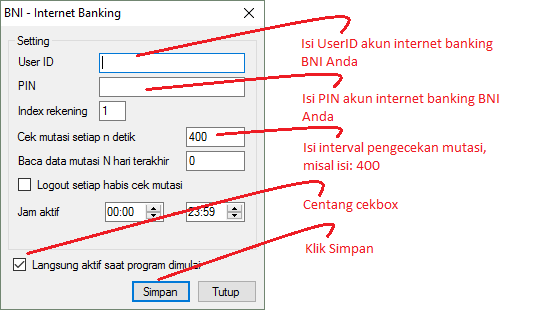

BNI
Modul BNI berguna untuk membaca mutasi di Internet Banking BNI versi Mobile sehingga deposit Reseller dapat masuk secara otomatis (tanpa campur tangan operator server) sesaat setelah Reseller melakukan transfer. Modul ini hanya tersedia di OtomaX edisi Advanced, Enterprise dan Ultimate klik disini. Apabila Anda belum mempunyai OtomaX klik disini; dan apabila sudah memiliki namun belum edisi tersebut untuk menikmatinya Anda harus melakukan Upgrade klik disini; dan apabila ingin membayar iuran tahunan OtomaX klik disini.
Berikut ini langkah - langkah mensettingnya:
- Pastikan Anda sudah mempunyai akun Internet Banking BNI, kalau belum silahkan datang ke kantor Bank BNI terdekat dari tempat tinggal Anda.
- Pastikan Edisi OtomaX Anda Advanced, Enterprise atau Ultimate sebab modul ini hanya tersedia di edisi tersebut.
-
Pada OtomaX pilih Modul BNI -> klik kanan -> klik Setting, lakukan sesuai petunjuk di gambar di bawah ini:

- Selesai